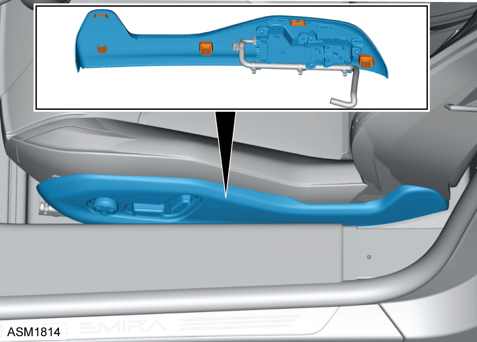
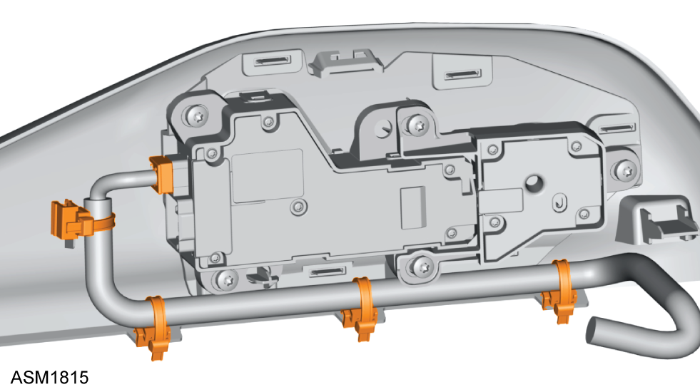
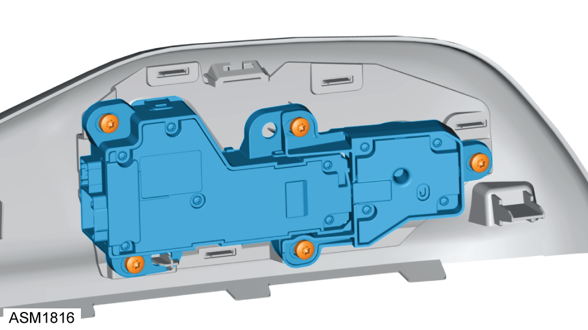

Switch - Seat - Driver
Print
Operation Code: 17.05.44-02
Removal
- Open door.

- Release clips (x5) securing seat outer trim to seat.

- Disconnect harness connector from seat switch.
- Slide off cable ties (x4) from seat outer trim.
NOTE: Do not cut cable ties.
- Remove seat outer trim.

- Remove M5x13 screws (x5) securing seat switch to seat outer trim.
- Remove seat switch.
Installation
- Installation is the reverse of removal procedure.